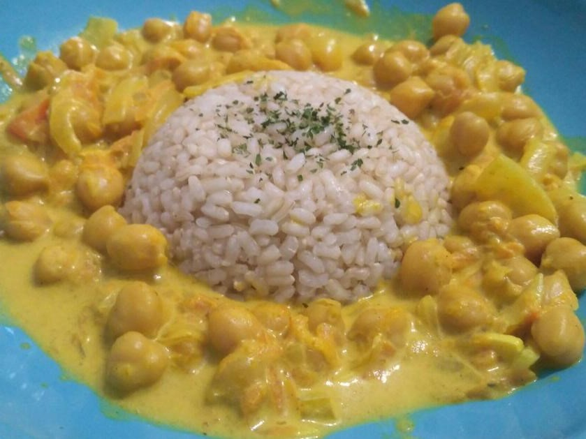

Curry de garbanzos
Este curry intenta ser lo más parecido a la receta original del curry hindú, salvando las distancias. Es una receta apta para veganos.
Dificultad: fácil
Duración: 45 minutos

Ingredientes:
- 2-3ajos
- Un trocitojengibre fresco
- 1cebolla
- 2zanahorias
- 1 ramaapio
- 1 cditacomino
- 1/2 cditacúrcuma
- 1/2 cditacilantro
- Pizcapimentón dulce
- 1 cditacurry
- Pizcacanela
- Al gustoSal y pimienta
- 1 hojalaurel
- Chorritozumo de limón
- 1cayena
- 1 lataleche de coco
- 1 botegarbanzos cocidos
Pasos a seguir:
- Primero preparamos las verduras:
- Picar muy fino el ajo y rallar el jengibre.
- Partir la cebolla en juliana.
- Picar la zanahoria en juliana o en pequeños cuadraditos (al gusto).
- Picar el apio.
- Poner en una olla un chorrito de aceite con el cilantro, el comino y la hoja de laurel (si son en grano, si no echar en el paso 4).
- Echar en la olla el ajo, la cebolla y el jengibre. Dorar un poco y echar el resto de verduras.
- Salpimentar y echar todas las especias.
- Saltear 5 minutos y echar la leche de coco.
- Echar el chorrito de limón y probar de sal.
- Dejar a fuego bajo 10 minutos.
- Añadir los garbanzos y dejar reducir un poco más si fuera necesario, hasta que la salsa quede espesita.
¡Que lo disfrutes!